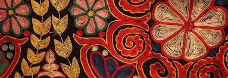
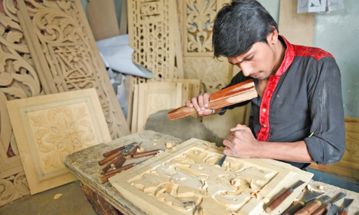
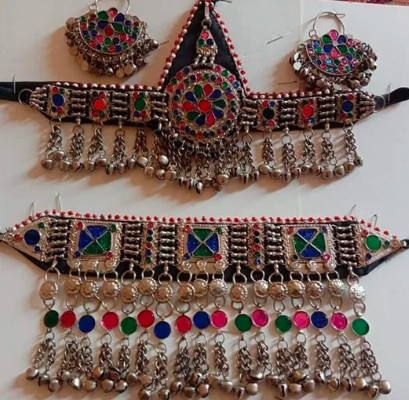

Pakistani Handicrafts and Art
Pakistan boasts a rich tradition of handicrafts and art that reflects its diverse culture, history, and regional identities. From the vibrant truck art seen on roads to the intricate embroidery found in traditional dresses, Pakistani artisans are known for their creativity, precision, and attention to detail. These art forms are not just decorative—they carry deep cultural significance and have been passed down through generations.
Each region of Pakistan brings its own flair to the world of handicrafts. In Sindh, mirror work and Ajrak (block-printed shawls) are popular; Punjab is known for Phulkari embroidery and wood carving; Balochistan offers beautifully detailed Balochi embroidery and stone jewelry; and Khyber Pakhtunkhwa showcases unique handwoven rugs and Chitrali caps.
One of the most eye-catching and globally recognized forms of Pakistani art is truck art—colorful, highly detailed designs painted on vehicles that turn ordinary trucks into moving masterpieces. Similarly, Multani blue pottery, camel skin lamps from Bahawalpur, and Khussa (traditional footwear) represent the depth of skill and heritage in Pakistani craftsmanship.
Handicrafts in Pakistan are more than artistic expressions—they are a source of livelihood for many rural communities and a strong representation of Pakistan’s identity on the global stage. Whether it’s textiles, ceramics, metalwork, or jewelry, Pakistani handicrafts continue to inspire appreciation for their beauty, history, and the hands that create them.
Famous Art And Handicrafts Of Pakistan:
Truck Art
Truck art is one of the most iconic and colorful expressions of Pakistani culture. It transforms ordinary vehicles—especially trucks, buses, and rickshaws—into vibrant, mobile pieces of art. This unique form of decoration includes intricate floral patterns, bold calligraphy, portraits of famous personalities, poetic verses, religious symbols, and scenic landscapes, all painted in eye-catching colors.
More than just decoration, truck art is a form of storytelling and identity. Drivers and artists use it to express their beliefs, emotions, humor, and regional pride. Each truck tells a personal story—some include prayers for protection, while others carry messages of love, patriotism, or wisdom. The decorations are often handmade using enamel paints, stickers, wood carvings, metalwork, and chains that jingle as the truck moves.

Image: Traditional Pakistani Truck Art
Blue Pottery
Blue pottery is a beautiful and delicate form of ceramic art that holds a special place in Pakistan’s rich artistic heritage. Most famously produced in the city of Multan, blue pottery is known for its vibrant blue and white colors, intricate floral patterns, and smooth glazed finish. The designs often include motifs like vines, leaves, birds, and geometric shapes inspired by Persian and Central Asian influences.
The name "blue pottery" comes from the striking cobalt blue dye used in the glazing process, giving the pieces their signature look. These ceramics are made using a special mixture of quartz, ground glass, and white clay, which makes them both delicate and smooth in texture. After shaping and painting, the items are fired in a kiln, resulting in stunning pottery that is both functional and decorative.
Blue pottery is used to create a variety of items such as plates, vases, tiles, bowls, and decorative wall hangings. Each piece is handcrafted and hand-painted by skilled artisans, often working in family-run workshops that have preserved this tradition for generations.

Image: Multani Blue Pottery
Traditional Embroidery
Traditional embroidery in Pakistan is a vibrant expression of the country's cultural diversity, with each region offering its own unique style, techniques, and color combinations. It is a centuries-old craft that has been passed down through generations, often practiced by women in rural communities as a part of their cultural heritage and daily life.
In Sindh, the embroidery is famous for its mirror work and bold geometric patterns, commonly seen on clothes, bags, and home textiles. Balochi embroidery is known for its intricate, fine needlework in deep, earthy colors, often used in traditional Balochi dresses. Punjabi embroidery, especially Phulkari, features bright, floral designs stitched with silk thread on shawls and dupattas. In Khyber Pakhtunkhwa and Gilgit-Baltistan, embroidery tends to be more subtle, focusing on woolen caps, shawls, and coats decorated with fine motifs.
Traditional embroidery is more than just decoration—it tells stories of identity, status, and regional pride. Each stitch reflects the artisan's creativity, skill, and emotional connection to their culture. It is commonly used to embellish bridal wear, everyday clothing, and even festive and ceremonial garments.

Image: Hand-embroidered fabrics
Wood Carving
Wood carving is one of the most exquisite and traditional art forms in Pakistan, showcasing the rich craftsmanship and cultural heritage of the country. This intricate craft involves shaping and decorating wood into detailed designs for furniture, doors, panels, ceilings, and decorative items.
The city of Chiniot in Punjab is especially renowned for its masterful wood carving. Artisans there work primarily with sheesham (rosewood) and teak, creating breathtakingly detailed floral and geometric patterns. Similarly, the Swat Valley and Dir regions in Khyber Pakhtunkhwa are also known for producing beautifully carved wooden doors, window frames, and household furniture, often with traditional motifs that reflect local culture and Islamic art.
Wood carving is not just limited to furniture; it is also a form of architectural beauty. Many old mosques, shrines, and havelis (mansions) across Pakistan feature hand-carved wooden elements that have stood the test of time.

Image: Wood Carving
Traditional Jewelry
Pakistani jewelry is a beautiful reflection of the country’s rich culture, heritage, and artistic traditions. Deeply rooted in history, it plays an important role in the lives of people—especially during weddings, festivals, and special occasions. Each region of Pakistan brings its own unique touch to jewelry design, making it diverse in both style and craftsmanship.
From the elegant gold sets of Punjab to the tribal silver jewelry of Balochistan and the colorful beaded ornaments of Sindh and Khyber Pakhtunkhwa, Pakistani jewelry showcases a wide range of materials and styles. Common pieces include necklaces, earrings, bangles, nose rings, anklets, jhumkas (dangling earrings), maang tikkas (forehead ornaments), and rings—often adorned with semi-precious stones, pearls, and traditional patterns.
Whether made of gold, silver, or imitation metals, Pakistani jewelry continues to be admired for its intricate beauty and traditional charm. Today, it is not only worn in traditional settings but also paired with modern outfits, making it a timeless expression of cultural pride and elegance.

Image: Traditional Pakistani Jewelry